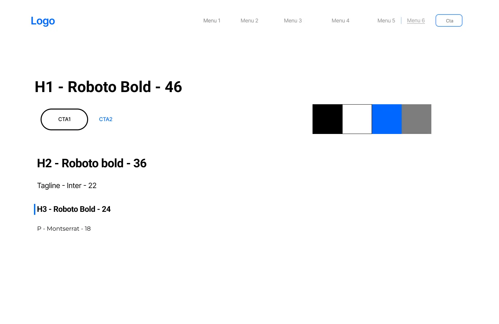
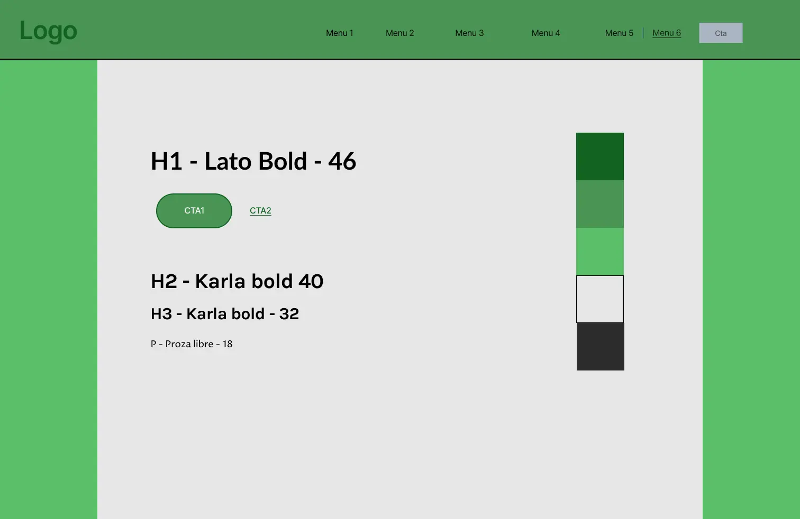
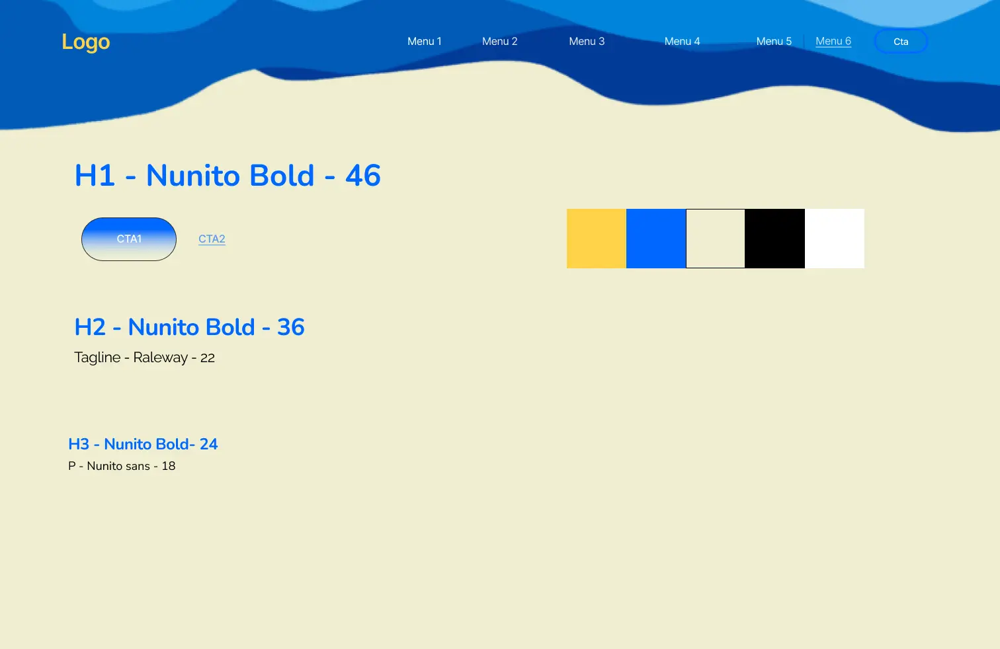
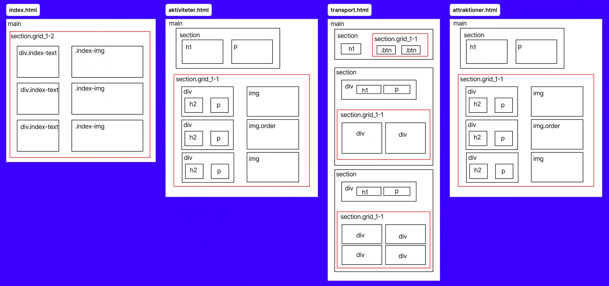
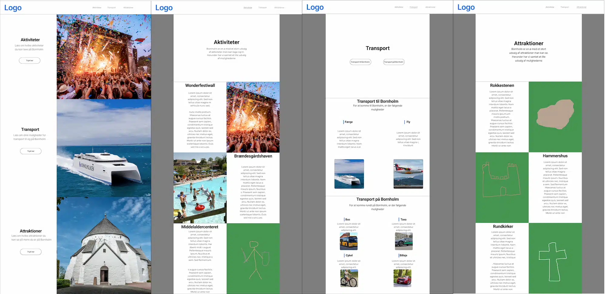

I dette tema, fik vi mere dybdegående viden omkring hvordan man
laver et website. Vi lærte om research og forskellige tests man
kan lave når man udvikler en hjemmeside
Opgavebeskrivelse
I dette tema skulle vi bruge den viden vi i forrige tema, lærte om
responsive websites. Hjemmesiden skulle omhandle et selvvalgt emne
Hvad lærte jeg?
Det var første gang, jeg selv stod for hele processen med at lave
en hjemmeside, hvilket var meget lærerigt. Undervejs blev der
arbejdet med forskellige designmetoder, som f.eks. at lave style
tile og prototyper. Ved hjælpe af forskellige brugertests fik jeg
indblik i, hvordan besøgende oplever siden, og hvad der skal
justeres for at give dem en god oplevelse.
Resultat
Her kan du se en kort fremvisning af mit færdige produkt fra
tema 3: en responsiv hjemmeside som jeg selv har stylet. Du
kan også trykke på knappen for at komme ind på siden
Da vi helt selv skulle stå for dette website, skulle vi starte ud
med at vælge et emne og så derefter generere idéer til indhold. I
og med at jeg er fra Bornholm, valgte jeg at lave en rejseguide om
hvad man kan opleve på Bornholm
Efter jeg havde valgt et emne og fået idéer til indholdet, var
næste trin at lave et style tiles til siden. Jeg lavede tre
forskellige, som jeg lavede likert test på, for at finde frem til
hvilket design der bedst stemte overens med det buskab jeg havde



Næste skridt i processen var at lave et wireframe over siden, for
at visualisere hvordan jeg ville have siden til at se ud. Et
wireframe er ligesom et skelet af siden, uden indhold, så man kan
finde ud af hvordan sidens layout skal være
Efter jeg havde lavet mine wireframes, gik jeg i gang med at lave
en high fidelity prototype. For at forsætte metaforen fra før, så
får skelettet nu hud, organer osv. Altså man tilføjer farver og
indhold, så det kommer til at se ud som man vil have slutproduktet
til
For at undersøge om brugeren fik det forventede indtryk af
hjemmesiden, lavede jeg en 5-sekunders test på forsiden. Det
ligger lidt i navnet hvad sådan en test går ud på, men kort
fortalt ser testtageren et billede jeg har valgt, i 5 sekunder, og
får derefter spørgsmål dertil. Det kan eksempelvis være et “Hvad
tror du siden handler om?”, på den måde kan man undersøge om
brugeren opfatter siden som tiltænkt
Efter 5-sekunders testen, lavede jeg en “tænke højt”-test på min
prototype. I en “tænke højt”-test får man en testtager, der ikke
har set siden før, til at bruge siden, mens de siger alt de tænker
højt. På den måde finder man ud af hvad der fungerer og hvad der
skal ændres
Når der var helt styr på hvordan siden skulle se ud, så begynder
det mere tekniske arbejde. Først skal der laves et layoutdiagram.
Et layout diagram viser hierakiet mellem elementerne på siden


Når siden var helt færdig, blev vi introduceret til en ny test:
Lighthouse test. En lighthouse test er et værktøj udviklet af
Google, som måler en side på forskellige parametre og kommer med
forslag til forbedringer